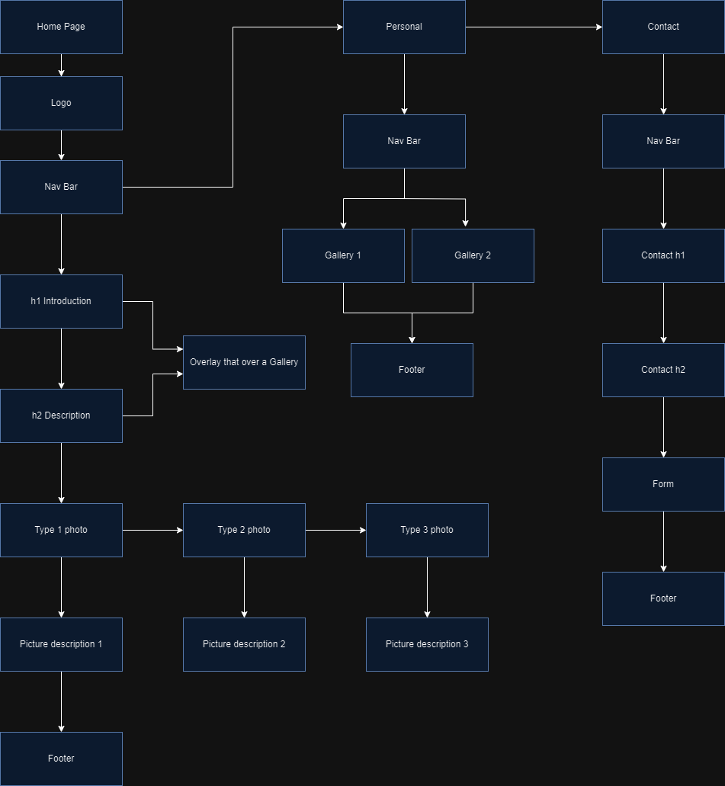

Wireframe
Using Google Draw.io, a wireframe for the default page design has been created for your project. The image and link are provided below.
.png)
Application and Purpose: I am planning to create a website for my friend, Connor Wilson, to showcase his photography work, particularly focusing on his 350z photography and other related photography projects.
Intended Users: The intended audience for this website is people interested in Connor's car photography and fans of his photography work.
Content Overview: The website will feature a description of the specifications of Connor's car, a photo gallery, and information about himself. Additional content may be added in the future.
Name of the Client: Connor Wilson
Organization/Business: Freelance Photographer
Client's Valid Email: cwils235@uncc.edu
Client's Phone Number (if available): N/A
Using Google Draw.io, a wireframe for the default page design has been created for your project. The image and link are provided below.
A sitemap for your website was created using Draw.io. The image and link are provided below.
Purpose: The purpose of this page is to introduce visitors to Connor and showcase his photography work.
Audience: The target audience remains the same - people interested in viewing Connor's photography portfolio.
Content: The page will include galleries and informative content to provide an overview of his work.
Data Input: No data input is required on this page, but a separate "Contact" page will have a form for user input.
Data Validation: Data handling for the contact form will be addressed in collaboration with Connor.
Page Elements: The default page features a navigation menu, a search bar, and various image galleries of Connor's car photography.
Page Actions: The page includes actions like navigating through the menu and utilizing the search bar.
Special Notes: N/A